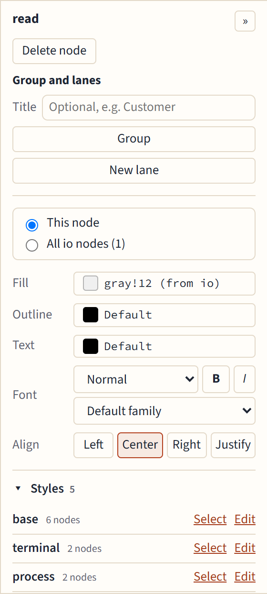

Colors, fonts and styles
The properties panel
Select a node and the panel on the right edits it:

- Fill, Outline and Text colors.
- Font: size (Tiny to Huge), Bold, Italic, and the family: serif (
\rmfamily), sans (\sffamily) or mono (\ttfamily). - Align: Left, Center, Right or Justify. Justify needs a text width, so the editor sets one from the text's current width.
- Delete node.
The « and » button hides and shows the panel; the editor remembers your choice. Select several nodes with Shift-click to change them all at once.
This node, or all nodes of its style
Most nodes get their look from a named style, such as process in \tikzset. The panel asks where a change goes:
- This node writes the option on the node itself.
- All process nodes edits the style, so every node that uses it changes, and the code stays tidy.
When a style isn't written in a form the editor can change safely, the second choice is grayed out and says why.
Colors
The color picker offers, in order: the colors your document already defines (\definecolor), common xcolor mixes such as blue!20, the basic colors, and a custom color. Give a custom color a name and Add named color adds a \definecolor and uses it; Use without a name writes its RGB values instead.
The Styles list
Under the panel, Styles lists your picture's styles and how many nodes use each. Edit changes a style's options for every node using it, and Select selects those nodes.
When several nodes spell out the same options, the list shows them under Repeated options, and Factor out turns them into a named style that those nodes then use.
Libraries
You don't need to manage \usetikzlibrary yourself: when an edit needs a library (positioning, shapes.geometric, fit, arrows.meta…), it is added, and one nothing uses any more is removed.
Names that clash with TikZ
A style named like a TikZ key, such as step, makes TeX fail on every node that uses it. The summary warns about it ("Style step is a TikZ key"), and Details shows the definition.